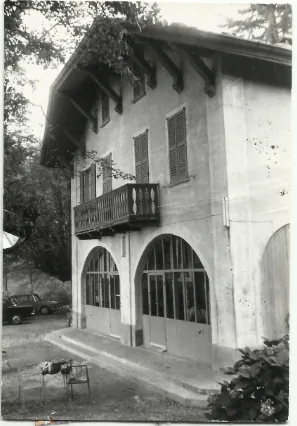

Da villa di riposo a locanda, da locanda a ristorante di famiglia: la Capanna Gigliola in quattro date.
Un «angolo di paradiso» per riposare il corpo e la mente dopo le giornate di lavoro in riva al lago.
1882
Una villa per riposare
La Capanna Gigliola viene fatta costruire dal proprietario della ceramica Revelli di Laveno Mombello, che cercava un «angolo di paradiso» dove riposare il corpo e la mente dopo le giornate di lavoro in riva al lago.
Fotografia d'epoca della villa.
1945
Da villa a locanda
Alla fine della seconda guerra mondiale la villa diventa una locanda. La rileva il gestore del bar Giglio, sul golfo di Laveno, allora sede del CAI: la nuova attività prende il nome di Giglio-Là, a indicare la montagna.
Il nome racconta da dove arrivava il nuovo gestore: «Giglio» per il bar, «Là» per la montagna.

La facciata con il balcone e gli archi.
1970
La famiglia Papini
Dopo alcuni cambi di gestione, Vittorio e Desolina Papini rilevano la Capanna Gigliola. A marito e moglie si aggiungono i figli Daniela e Alessandro.
Cartolina d'epoca con la Capanna e le montagne di Vararo.
1996
L'ampliamento
Importanti lavori di ampliamento portano la Capanna alla configurazione attuale. E, come dice la famiglia, la storia non si ferma qui.
La Capanna in inverno.
Oggi
La cucina di casa, nella taverna in sasso e legno
La Capanna Gigliola è il posto ideale per cene di lavoro, per il ristoro dopo una bella camminata in montagna, per pranzi romantici sul balcone del lago o davanti al camino.
Si può scegliere tra due menu fissi da prenotare in anticipo oppure tra le specialità rustiche del menu alla carta. La cucina è casalinga: antipasti a base di salumi, sottoli e sottaceti, pasta fatta in casa, polenta con selvaggina, funghi porcini, grigliate, dolci e gelato di produzione propria, anche con latte di capra.
Chi vuole chiudere il pasto in modo classico può ordinare il caffè alla valdostana, servito nell'originale coppa dell'amicizia.
Lavoriamo solo su prenotazione, perché la conduzione è familiare. Il modo più rapido è chiamare o scrivere su WhatsApp. Il martedì il ristorante è chiuso.